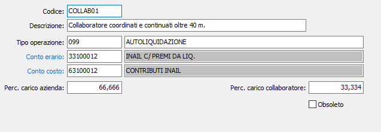

Codici Inail
La tabella consente di memorizzare le informazioni per i conteggi relativi all’Inail.

CODICE: campo numerico di 8 caratteri per definire il codice della massimale assicurativo in esame. Sul campo sono attive le funzioni di vista (F9) sulla tabella stessa.
DESCRIZIONE: campo alfanumerico di 50 caratteri per inserire la descrizione del codice.
TIPO OPERAZIONE: campo alfanumerico di 4 caratteri per indicare la causale operazione che deve essere stampata sull’ F24 in occasione dell’autoliquidazione annuale.
CONTO ERARIO: codice alfanumerico di 8 caratteri presente nel piano dei conti per inserire il codice del sottoconto patrimoniale di contabilità a cui devono essere imputati gli importi di premio da versare all’INAIL. Sul campo sono attive le funzioni di ricerca (F9) e manutenzione (CTRL+W) sulla tabella stessa.
CONTO COSTO: codice alfanumerico di 8 caratteri presente nel piano dei conti per inserire il codice del sottoconto economico di contabilità a cui devono essere imputati come costo aziendale gli importi di premio a carico dell’azienda. Sul campo sono attive le funzioni di ricerca (F9) e manutenzione (CTRL+W) sulla tabella stessa.
%CARICO AZIENDA: campo numerico in cui inserire la percentuale di premio a carico dell’azienda.
%CARICO COLLABORATORE: campo numerico in cui inserire la percentuale di premio a carico del collaboratore.